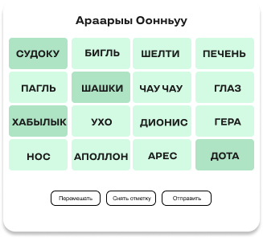
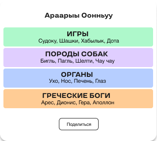

How to Play Connections NYT Game?
-
Read the words
The first step is to carefully read and understand the words provided in the Connections New York Times Word Game. Take your time to understand each word and think about what it means in relation to the Connections Puzzle.If you need assistance, feel free to use Google or other resources to help you understand the meaning of the words.
-
Look for a Common Thing
In the Connections game, after reading and understanding the words, your next step is to find the common theme that connects them.During this step, you can ask yourself questions like: Do the words belong to the same group? Are they similar in some way? Do they have a connection to a specific topic or idea? Look for relationships or similarities between the words to find the common theme.  -
Select & Submit Your Answer
Once you have identified the common theme and found the four words that fit within that theme, it's time to make your selection.After selecting the four words, you need to submit your answer. You can do that by clicking on Submit button. 